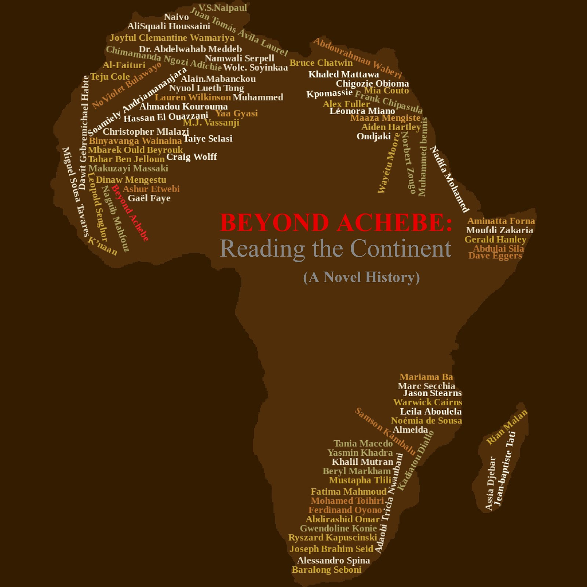

One novel and one poem from every country in Africa — telling the history of a continent through its fiction
Beginning in 2016, I set out to read a novel by an author from every country on the African continent — 54 countries in all. A parallel effort runs alongside it: finding a poem from every country too.
The project grew out of a conviction that fiction does something history cannot. It forces you to internalize events — to connect dry numbers and facts to the actual people behind them. A novel about the Algerian independence struggle does more for your understanding of that war than any briefing paper.
The end goal is a book: a history of Africa told through these novels and poems, one country at a time.
"We believe the one who has power. He is the one who gets to write the story. So when you study history, you must ask yourself, Whose story am I missing?"
— Yaa Gyasi, Homegoing (Ghana)
The map is taking a moment to load.
The future book cover — Africa mapped by its novelists
Search by country, book, author or poem. Click any card to read the review, filter by region, or click a tag inside any review.
Know a novel or poem I'm missing? Spotted an error? Send it along.
Thank you — it's in my inbox. Every good suggestion lands on the list eventually.